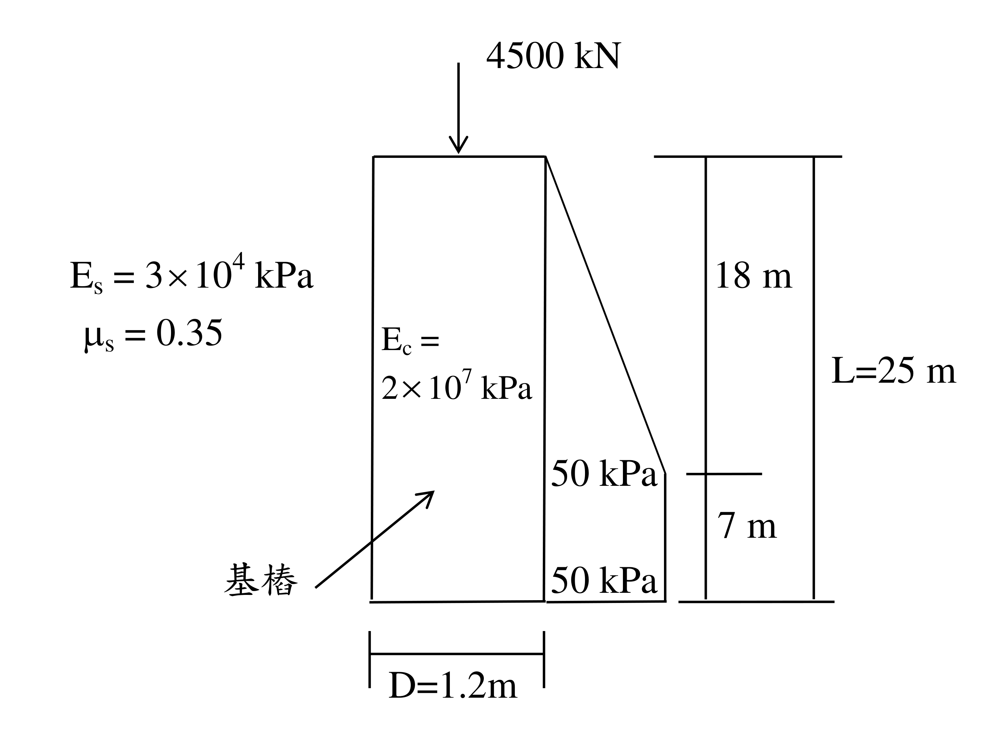
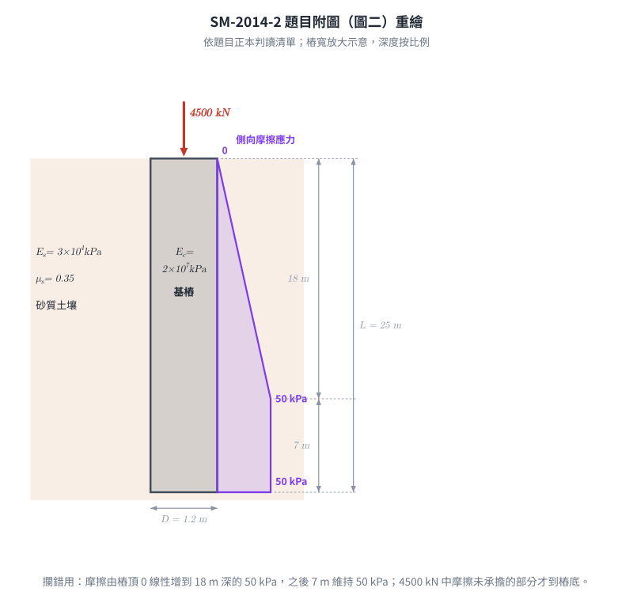
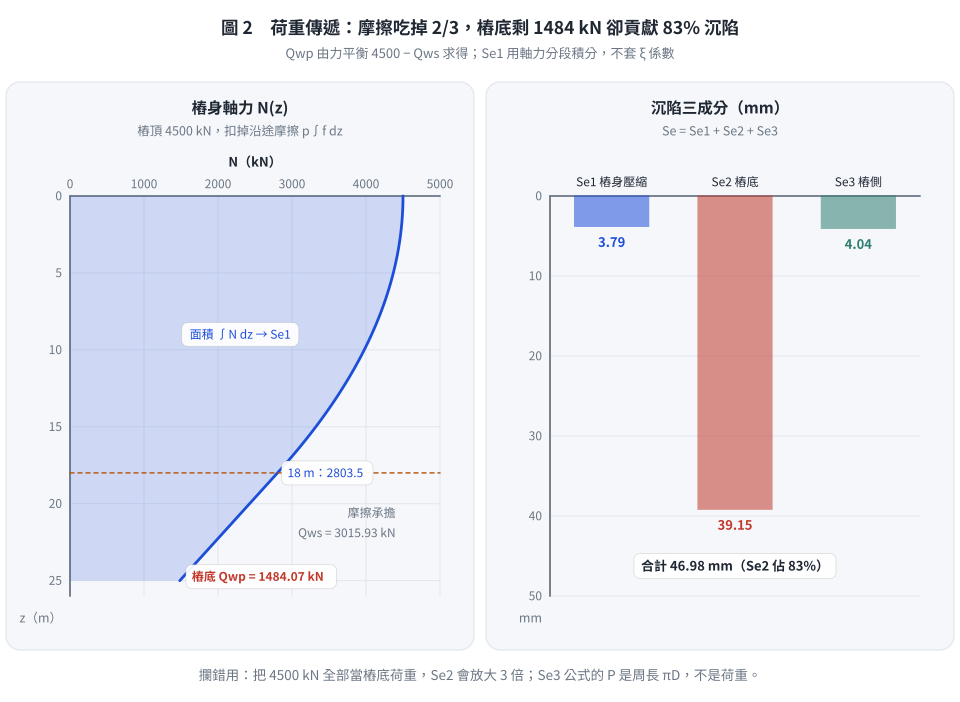

📄 題目正本：考卷原文・附圖・判讀清單（已確認）
SM-2014-2 題目正本
本檔只記錄考卷上寫了什麼、圖上畫了什麼，不含任何解法。解析見同資料夾
SM-2014-2.md。
判讀清單已確認（凍結）；本檔原則上不再修改（改動須回考卷原圖並記 log）。
| 項目 | 內容 |
|---|---|
| 考卷 | raw/exams/SM-2014_土壤力學與基礎設計.pdf 第 2 頁（頁次 4－2），第二題 |
| 考年 | 民國 103 年（2014） |
| 配分 | 25 分 |
| 附圖 | SM-2014-2-fig-2.png（圖二；2026-11-15 由考卷重新擷取 500 dpi）；既有 SM-2014-2-fig-1.png 為同一圖，樁身內有滑鼠游標，保留不刪 |
| 判讀狀態 | 已確認（2026-11-15 關卡一：使用者授權依建議判讀確認；轉錄 2026-11-15；PyMuPDF 110 dpi 全頁目視，題文公式 300 dpi、附圖 500 dpi 局部放大；附圖為向量線條，以 PDF drawings 座標核對；盲讀後才比對既有解析） |
1. 考卷原文（逐字）
二、有一直徑 D=1.2 m、長 L=25 m 基樁，埋設於砂質土壤內部，其頂部承受 4500 kN 軸重，隨樁深之側向摩擦應力分佈情形如圖二所示，由頂端為零以線性增加至 18 m 深之 50 kPa，保持 50 kPa 至樁底部，試求該樁之總沉陷量。基樁之楊氏模數（Young's Modulus）$E_c$ 為 2.0×10⁷ kPa，基樁之底部彈性沉陷 $s_{e2}=\dfrac{q_{wp}D}{E_s}\left(1-\mu_s^2\right)I_{wp}$，$I_{wp}$=0.85，基樁之側向摩擦彈性沉陷 $s_{e3}=\left(\dfrac{Q_{ws}}{PL}\right)\dfrac{D}{E_s}\left(1-\mu_s^2\right)I_{ws}$，$I_{ws}=2+0.35\sqrt{\dfrac{L}{D}}$，$E_s$ 為砂質土楊氏模數，$\mu_s$ 為砂質土柏松比，$E_s$ 與 $\mu_s$ 分別為 3×10⁴ kPa 與 0.35。（25 分）
2. 考卷給的公式、附表與參數
- 基樁：$D$ = 1.2 m、$L$ = 25 m、$E_c$ = 2.0×10⁷ kPa；樁頂軸重 4500 kN。
- 側向摩擦應力分布：樁頂 0 → 線性增至深 18 m 處 50 kPa → 50 kPa 定值至樁底（18～25 m，7 m）。
- 底部彈性沉陷：$s_{e2}=\dfrac{q_{wp}D}{E_s}(1-\mu_s^2)I_{wp}$，$I_{wp}$ = 0.85。
- 側向摩擦彈性沉陷：$s_{e3}=\left(\dfrac{Q_{ws}}{PL}\right)\dfrac{D}{E_s}(1-\mu_s^2)I_{ws}$，$I_{ws}=2+0.35\sqrt{L/D}$。
- 砂質土：$E_s$ = 3×10⁴ kPa、$\mu_s$ = 0.35。
- 沒有給：樁身彈性壓縮 $s_{e1}$ 的公式與摩擦分布係數 ξ、$q_{wp}$／$Q_{ws}$／$P$ 的定義文字、樁自重、地下水位。
- 卷首注意事項：可以使用電子計算器。不必抄題，作答時請將試題題號及答案依照順序寫在試卷上，於本試題上作答者，不予計分。
3. 附圖

圖面文字照錄：4500 kN、Es = 3×10⁴ kPa、μs = 0.35、Ec =、2×10⁷ kPa、基樁、50 kPa（兩處）、18 m、7 m、L=25 m、D=1.2m、（圖二）。
4. 判讀清單
| # | 項目 | 判讀 | 圖上／題文依據 | 把握 |
|---|---|---|---|---|
| 1 | 樁底荷重 $Q_{wp}$ | 考卷沒寫；判讀為由力平衡 $Q_{wp} = 4500 - Q_{ws}$（樁自重不計），$q_{wp}=Q_{wp}/A_p$ | 題文只給樁頂 4500 kN 與摩擦分布 | 確定（解讀） |
| 2 | 樁身彈性壓縮 $s_{e1}$ | 考卷沒給公式與 ξ；「總沉陷量」須自行補 $s_{e1}$，由摩擦分布直接積分軸力或用 ξ 公式 | 題文只給 $s_{e2}$、$s_{e3}$ 與 $E_c$ | 確定（解讀） |
| 3 | 摩擦分布 | 樁頂 0，線性增到深 18 m 的 50 kPa，18～25 m 維持 50 kPa | 題文；圖二 PDF 座標：斜線 (318.6, 332.2) → (367.8, 462.4)，再垂直到 515.0；轉折在全長 0.71 處（18/25 = 0.72） | 確定 |
| 4 | 尺寸線 | 18 m 由樁頂量到轉折點，7 m 由轉折點量到樁底，總長 L = 25 m 由樁頂到樁底 | 圖二右側兩條尺寸線，上端對齊樁頂水平線 (y 332.3)、下端對齊樁底 (y 515) | 確定 |
| 5 | 樁頂與地表 | 圖上沒畫地表；判讀為樁頂齊地表（摩擦由樁頂 0 起算） | 圖二摩擦分布由樁頂開始 | 確定（解讀） |
| 6 | $P$ 的意義 | $s_{e3}$ 式中 $P$ 為樁周長 $\pi D$ | 公式慣用記號；題文未定義 | 確定（解讀） |
| 7 | 樁斷面 | 直徑 1.2 m 實心圓（圖二畫成矩形為立面） | 題文「直徑 D=1.2 m」 | 確定（解讀） |
| 8 | 圖面比例 | 樁寬與樁長不按比例（寬 70 pt、長 183 pt） | PDF 座標 | 確定 |
| 9 | 所求 | 樁之總沉陷量（$s_{e1}+s_{e2}+s_{e3}$） | 題文 | 確定（解讀） |
| 10 | 考卷沒有給 | ξ、$s_{e1}$ 公式、樁自重、地下水位、$q_{wp}$ 定義 | 全題 | 確定 |
轉錄：2026-11-15（SM-U2-2 題目正本推廣・批 1）
確認：2026-11-15 使用者授權依建議判讀確認（SM-U2-2 題目正本推廣・批 1，關卡一；使用者指示「要我確認的請依你建議」）
考題編號：SM-2014-2
主分類： SM-U2-2 深基礎之支承力與沉陷量
副分類： 無
分析法： 總應力法
標籤： 樁沉陷 彈性沉陷 樁身彈性壓縮 端點承載力 摩擦力 摩擦應力分布
1. 題目（考卷原文見題目正本）
考卷原文、公式／附表、附圖與判讀清單（已確認）見
SM-2014-2-problem.md。本節只列解題時最容易讀錯的地方與本解使用的記號；題意以題目正本為準。

重繪自考卷圖二，依題目正本判讀清單 #3–#5、#7；攔下的判讀錯誤：18 m 由樁頂量到轉折點、7 m 為轉折點到樁底。
常見誤讀
| 項目 | 正確判讀 | 常見誤讀 |
|---|---|---|
| 樁底荷重 | 考卷沒寫；由力平衡 $Q_{wp}=4500-Q_{ws}$，$q_{wp}=Q_{wp}/A_p$（題目正本 #1） | 把 4500 kN 全部當成樁底荷重 |
| 樁身壓縮 $s_{e1}$ | 考卷沒給公式與 ξ，須自行補上（直接積分軸力或用 ξ 公式）（#2） | 總沉陷只算 $s_{e2}+s_{e3}$ |
| $s_{e3}$ 式的 $P$ | 樁周長 $\pi D$（#6） | 當成載重代入 |
本解記號： $Q_{ws}$ 樁身摩擦承擔的荷重；$Q_{wp}$ 樁底荷重；$p=\pi D$ 周長；$s_{e1}$、$s_{e2}$、$s_{e3}$ 樁身壓縮、樁底與樁側引起的沉陷。
2. 考題核心精神與出題者意圖 (Core Concepts & Examiner's Intent)
本題旨在測驗考生對於基樁沉陷量三成分 (樁身壓縮 $S_{e1}$、樁底土壤變形 $S_{e2}$、樁側土壤變形 $S_{e3}$) 之計算能力。
出題者明確給定 $S_{e2}$ 與 $S_{e3}$ 之經驗公式，測驗重點在於：
- 側摩擦力 $Q_{ws}$ 與端承載力 $Q_{wp}$ 的分離：需由給定之應力分佈圖，精確積分出總側摩擦力，並由力平衡求出端承載力。
- 樁身壓縮 $S_{e1}$ 的計算：面對非均勻分佈之側摩擦力，需具備應用材料力學基本定義 $S_{e1} = \int \frac{Q(z)}{AE} dz$ 進行分段積分之能力，而非死背 $\alpha$ 係數公式。
- 單位與幾何參數：圓面積 $A_p$、周長 $p$、$q_{wp}$ 之換算不能出錯。
3. 解題戰略地圖與陷阱分析 (Strategic Roadmap & Trap Analysis)
- 計算幾何參數：樁斷面積 $A_p$ 與樁周長 $p$。
- 力平衡分析求 $Q_{ws}$ 與 $Q_{wp}$：
- 將摩擦應力 $f_s(z)$ 依深度分為三角形分佈 ($0 \sim 18 \text{ m}$) 與矩形分佈 ($18 \sim 25 \text{ m}$)。
- 乘上樁周長 $p$ 得到總摩擦力 $Q_{ws}$。
- 由 $Q_t = Q_{ws} + Q_{wp}$ 求出樁底傳遞荷重 $Q_{wp}$ 與基底應力 $q_{wp}$。
- 計算樁身彈性壓縮 $S_{e1}$：
- 推導樁身軸力 $Q(z) = Q_t - \int_0^z f_s(x) p \, dx$。
- 帶入 $S_{e1} = \int_0^L \frac{Q(z)}{A_p E_p} dz$ 進行分段積分。
- 計算樁底與樁側沉陷 $S_{e2}, S_{e3}$：
- 將前述參數代入題目給定之公式，注意單位一致性。
- 陷阱分析：
- ⚠️ $S_{e3}$ 公式中的 $p$：題目原文公式寫為 $PL$ 且 $P$ 未明定，依據 Vesic 理論，分母的 $P$ 實為周長 perimeter，本文以 $p$ 標示以避免與荷重 $P$ 混淆。
- ⚠️ 端承應力 $q_{wp}$ 的定義：$q_{wp} = Q_{wp}/A_p$，並非直接帶入 $Q_{wp}$。
- ⚠️ 單位：全算式統一採用 $\text{kN}$ 與 $\text{m}$，沉陷量最終換算為 $\text{mm}$。
3.5 變數層次分析 (Variable Hierarchy Analysis)
最終目標
計算基樁頂部受軸壓時，樁體變形與周圍土壤變形所產生的總沉陷量 $S_e$。
本題關鍵公式（依計算順序）
總側摩擦阻力：
$$ Q_{ws} = p \int_0^L f_s(z) \, dz $$
樁底端承載力：
$$ Q_{wp} = Q_t - \boxed{Q_{ws}} $$
樁身彈性壓縮量（分段積分）：
$$ S_{e1} = \int_0^L \frac{Q(z)}{A_p E_p} dz \quad \text{where } Q(z) = Q_t - p \int_0^z f_s(x) dx $$
樁底彈性沉陷量：
$$ S_{e2} = \frac{\left( \boxed{Q_{wp}} / A_p \right) D}{E_s} (1-\mu_s^2) I_{wp} $$
樁側彈性沉陷量：
$$ S_{e3} = \left( \frac{\boxed{Q_{ws}}}{p L} \right) \frac{D}{E_s} (1-\mu_s^2) \left( 2+0.35\sqrt{\frac{L}{D}} \right) $$
L1：題目直接給定
| 符號 | 數值 | 說明 |
|---|---|---|
| $D$ | $1.2 \text{ m}$ | 基樁直徑 |
| $L$ | $25 \text{ m}$ | 基樁長度 |
| $Q_t$ | $4500 \text{ kN}$ | 樁頂承受軸重 |
| $E_p$ | $2.0 \times 10^7 \text{ kPa}$ | 樁身楊氏模數 |
| $E_s$ | $3 \times 10^4 \text{ kPa}$ | 土壤楊氏模數 |
| $\mu_s$ | $0.35$ | 土壤柏松比 |
| $I_{wp}$ | $0.85$ | 樁底沉陷影響係數 |
L2：需知識點推導
幾何與荷重分配
| 符號 | 公式／來源 | 卡關? |
|---|---|---|
| $A_p$ | $\frac{\pi}{4}D^2$ | |
| $p$ | $\pi D$ | |
| $Q_{ws}$ | $p \int_0^L f_s(z) dz$ | |
| $Q_{wp}$ | $Q_t - Q_{ws}$ | |
| $q_{wp}$ | $Q_{wp} / A_p$ | |
沉陷量計算
| 符號 | 公式／來源 | 卡關? |
|---|---|---|
| $S_{e1}$ | $\int_0^L \frac{Q(z)}{A_p E_p} dz$ | |
| $I_{ws}$ | $2 + 0.35\sqrt{L/D}$ | |
| $S_{e2}$ | $\frac{q_{wp} D}{E_s}(1-\mu_s^2)I_{wp}$ | |
| $S_{e3}$ | $(\frac{Q_{ws}}{p L})\frac{D}{E_s}(1-\mu_s^2)I_{ws}$ | |
| $S_e$ | $S_{e1} + S_{e2} + S_{e3}$ | |
L3：深層知識（不懂就卡住）
| 知識點 | 說明 | 卡關? |
|---|---|---|
| $S_{e1}$ 積分法 | 當 $f_s$ 非均佈時，需以 $Q(z) = Q_t - \Sigma f_s$ 分段列式並積分，勿直接用經驗係數 $\alpha=0.5$ 計算 | |
| $S_{e3}$ 公式解析 | 公式中的 $P$ 或 $p$ 指的是 Perimeter (樁周長)，$Q_{ws}/(pL)$ 實為平均側向摩擦應力 $f_{s,avg}$ |
4. 步驟化詳細計算過程 (Step-by-Step Detailed Calculation)
Step 1: 幾何參數計算
基樁斷面積：
$$ A_p = \frac{\pi}{4}D^2 = \frac{\pi}{4}(1.2)^2 = 0.36\pi \approx 1.13097 \text{ m}^2 $$
基樁周長：
$$ p = \pi D = 1.2\pi \approx 3.76991 \text{ m} $$
樁體軸向勁度：
$$ A_p E_p = (0.36\pi) \times (2.0 \times 10^7) = 7.2\pi \times 10^6 \text{ kN} \approx 22619467 \text{ kN} $$
Step 2: 樁側摩擦力 $Q_{ws}$ 與端承載力 $Q_{wp}$
側向摩擦應力分佈：
- $0 \le z \le 18 \text{ m}$：$f_s(z) = \frac{50}{18}z \text{ kPa}$
- $18 \le z \le 25 \text{ m}$：$f_s(z) = 50 \text{ kPa}$
對深度積分求單位周長之摩擦力：
$$ \int_0^{25} f_s(z) dz = \left( \frac{1}{2} \times 18 \times 50 \right) + \left( 7 \times 50 \right) = 450 + 350 = 800 \text{ kN/m} $$
總側摩擦力 $Q_{ws}$：
$$ Q_{ws} = p \int_0^{25} f_s(z) dz = (1.2\pi) \times 800 = 960\pi \approx 3015.93 \text{ kN} $$
端承載力 $Q_{wp}$：
$$ Q_{wp} = Q_t - Q_{ws} = 4500 - 960\pi \approx 1484.07 \text{ kN} $$
樁底應力 $q_{wp}$：
$$ q_{wp} = \frac{Q_{wp}}{A_p} = \frac{4500 - 960\pi}{0.36\pi} = \frac{12500}{\pi} - 2666.67 \approx 1312.19 \text{ kPa} $$
Step 3: 樁身彈性壓縮 $S_{e1}$ 計算
深度 $z$ 處之軸力 $Q(z)$ 為：
-
$0 \le z \le 18 \text{ m}$：
$$ Q(z) = Q_t - p \int_0^z \left( \frac{50}{18}x \right) dx = Q_t - p \left( \frac{25}{18}z^2 \right) $$ -
$18 \le z \le 25 \text{ m}$：
$$ Q(z) = Q(18) - p \int_{18}^z 50 \, dx = (Q_t - 450p) - 50p(z - 18) $$
積分求 $S_{e1}$ 分子 $\int_0^{25} Q(z) dz$：
第一段 ($0 \sim 18 \text{ m}$)：
$$ \int_0^{18} \left( Q_t - p \frac{25}{18}z^2 \right) dz = \left[ Q_t z - p \frac{25}{54} z^3 \right]_0^{18} = 18 Q_t - 2700 p $$
第二段 ($18 \sim 25 \text{ m}$)，令 $y = z - 18$：
$$ \int_0^7 \left[ (Q_t - 450p) - 50p y \right] dy = 7 (Q_t - 450p) - 25p(7)^2 = 7 Q_t - 3150p - 1225p = 7 Q_t - 4375 p $$
加總兩段：
$$ \int_0^{25} Q(z) dz = 25 Q_t - 7075 p $$
代入數值 $Q_t = 4500$ 與 $p = 1.2\pi$：
$$ \int_0^{25} Q(z) dz = 25(4500) - 7075(1.2\pi) = 112500 - 8490\pi \approx 85827.88 \text{ kN}\cdot\text{m} $$
計算樁身變形：
$$ S_{e1} = \frac{1}{A_p E_p} \int_0^{25} Q(z) dz = \frac{112500 - 8490\pi}{7.2\pi \times 10^6} \approx 0.003794 \text{ m} = \boxed{3.79 \text{ mm}} $$
Step 4: 樁底彈性沉陷 $S_{e2}$ 計算
代入題目給定公式：
$$ S_{e2} = \frac{q_{wp} D}{E_s} (1-\mu_s^2) I_{wp} $$
$$ S_{e2} = \frac{1312.19 \times 1.2}{3 \times 10^4} \times (1 - 0.35^2) \times 0.85 = 0.052488 \times 0.8775 \times 0.85 \approx 0.039149 \text{ m} = \boxed{39.15 \text{ mm}} $$
Step 5: 樁側彈性沉陷 $S_{e3}$ 計算
先求係數 $I_{ws}$：
$$ I_{ws} = 2 + 0.35\sqrt{\frac{L}{D}} = 2 + 0.35\sqrt{\frac{25}{1.2}} = 2 + 0.35(4.564) = 3.5975 $$
代入 $S_{e3}$ 公式（注意 $Q_{ws}/(pL)$ 實為平均摩擦應力）：
$$ \frac{Q_{ws}}{p L} = \frac{960\pi}{1.2\pi \times 25} = \frac{800}{25} = 32 \text{ kPa} $$
$$ S_{e3} = \left( \frac{Q_{ws}}{p L} \right) \frac{D}{E_s} (1-\mu_s^2) I_{ws} $$
$$ S_{e3} = 32 \times \frac{1.2}{3 \times 10^4} \times (1 - 0.35^2) \times 3.5975 = 0.00128 \times 0.8775 \times 3.5975 \approx 0.004041 \text{ m} = \boxed{4.04 \text{ mm}} $$

圖 2 荷重傳遞與沉陷三成分。軸力曲線下的面積就是 $S_{e1}$ 的分子；樁底只剩約三分之一荷重，卻貢獻 83% 沉陷。攔下「把 4500 kN 全部當樁底荷重」與「$S_{e3}$ 式中 $P$ 當成荷重」的錯誤。
Step 6: 總沉陷量計算
$$ S_e = S_{e1} + S_{e2} + S_{e3} = 3.79 + 39.15 + 4.04 = \boxed{46.98 \text{ mm}} $$
5. 關鍵爭議點與進階探討 (Critical Issues & Advanced Discussion)
- $S_{e1}$ 的近似法差異：實務上常使用經驗公式 $S_{e1} = \frac{(Q_{wp} + \alpha Q_{ws})L}{A_p E_p}$，若假設摩擦力為均佈（$\alpha=0.5$）或三角形分佈（$\alpha \approx 0.67$），會得到與精確積分不同的結果。本題摩擦力為複合分佈，推算其等效 $\alpha \approx 0.646$，故考場上建議直接利用材料力學原理分段積分，能避免選用 $\alpha$ 係數之爭議且理論嚴謹。
- 符號 $P$ 與 $p$ 的釐清：考卷排版上 $S_{e3}$ 公式寫作 $P L$，許多考生會誤將 $P$ 當成載重。但在 Vesic (1977) 半經驗理論中，$P \cdot L$ 代表的是樁身總表面積 (Perimeter $\times$ Length)，因此應代入 $p = \pi D$ 進行運算，理解公式中 $\frac{Q_{ws}}{p L}$ 為「平均樁側摩擦應力」即可輕易避開此陷阱。
修正日期：2026-11-15（§1 改為指向題目正本 SM-2014-2-problem.md，重繪附圖 figs/SM-2014-2-fig-1-problem.svg；§4 Step 3 中間值筆誤 85827.44 → 85827.88（$S_{e1}$ 不變）（盲解比對後補充，答案未變）；§4 Step 5 後 補解題圖解 figs/SM-2014-2-fig-2-load-transfer.svg；非勘誤）